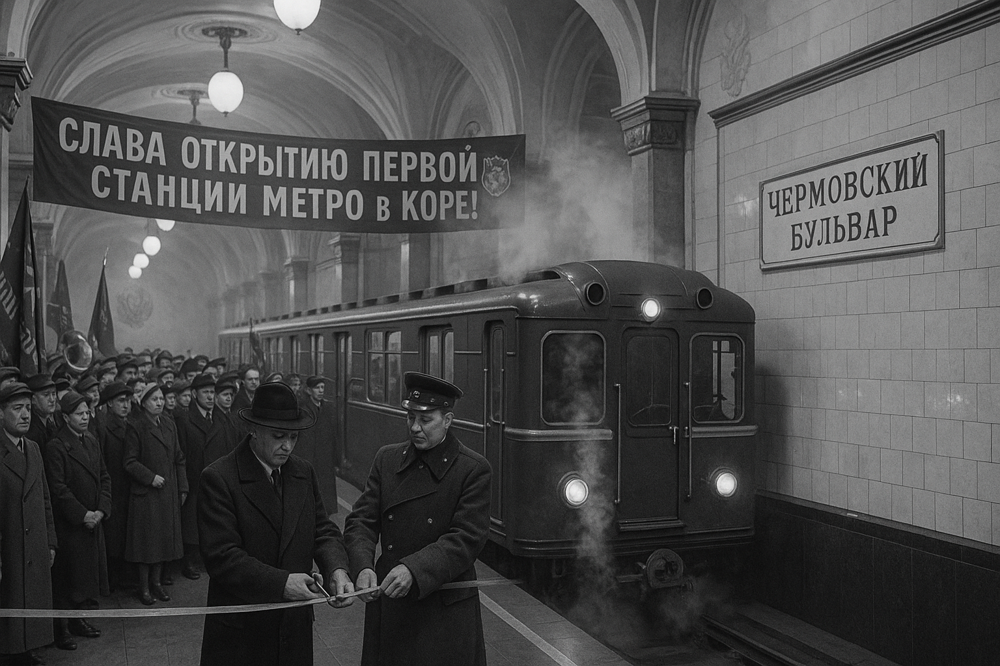
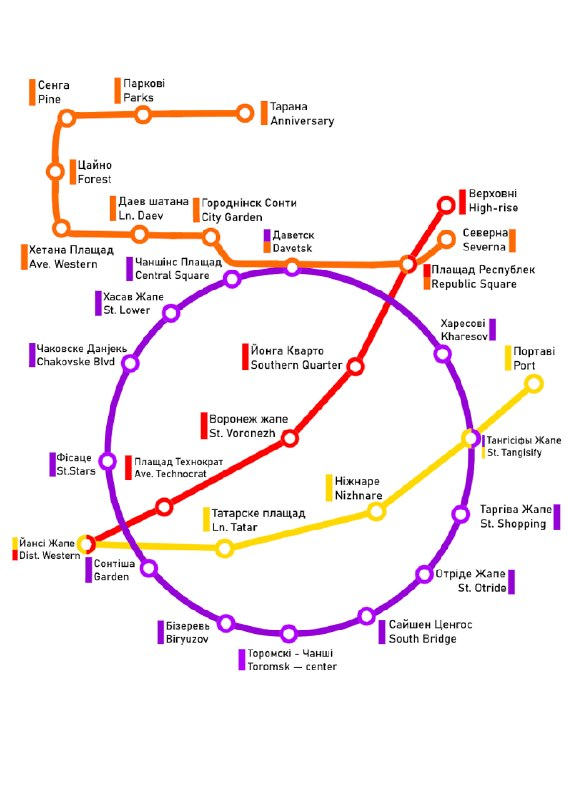
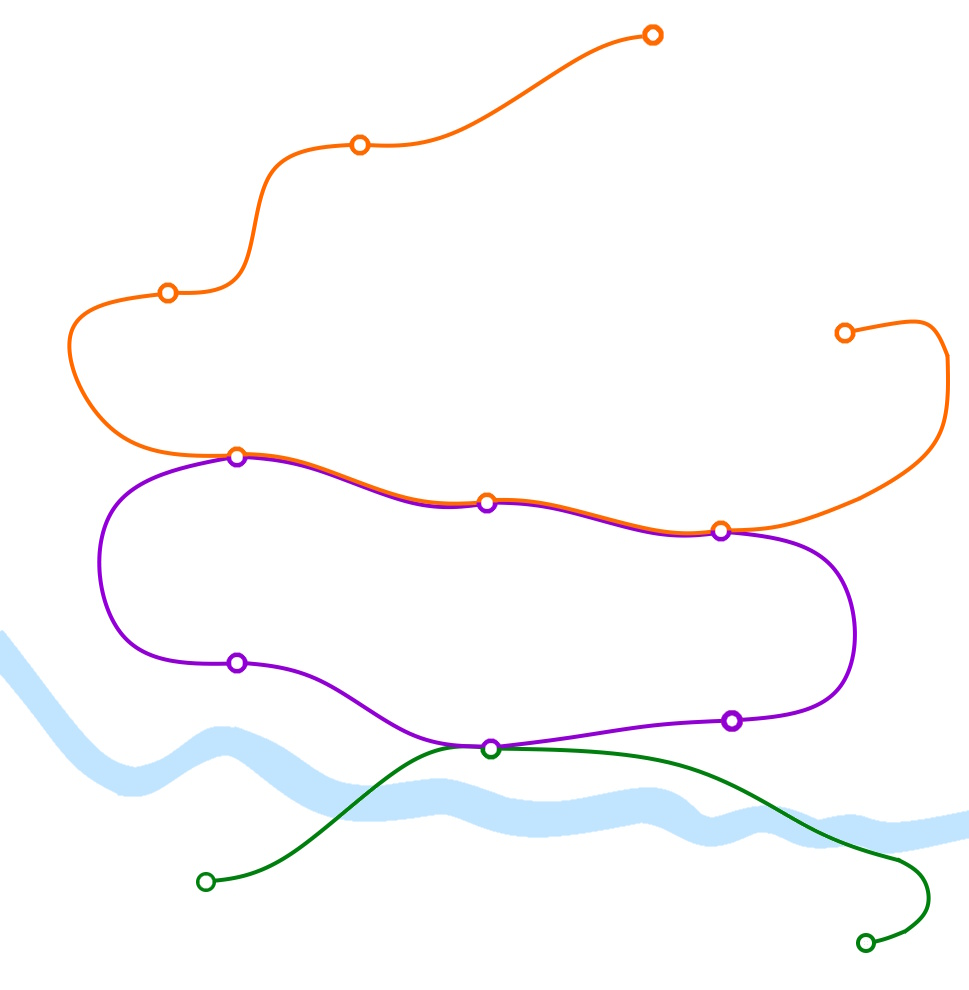

Kora Metro
Kora Metro is a rapid transit system in the capital of Kivish, opened on June 24, 1939. It is one of the oldest transport systems in the country and serves the entire Kora urban district.
Kora Metro consists of three lines: the Circle line (purple), Line 1 (orange), and Line 2 (green). Despite the city’s compact size, the metro plays a major role in providing fast links between residential, industrial, and cultural districts.
History

Construction began in 1936 as part of a modernization program for urban infrastructure. The first stage—the purple Circle line—opened on June 24, 1939 and included six stations. The system immediately became a symbol of Kora’s technical progress and was used as a showcase of Kivish engineering achievements.
During post-war recovery (the 1940s–1950s), the metro expanded actively: transfer hubs appeared, and stations were decorated in a monumental modern style. In the 1970s, the orange Line 1 was built, connecting northern districts, and by the 1990s the green Line 2 was added, leading to Podolskaya and Ovrazhnaya streets across the river.
Lines and stations
Circle line (purple)
The oldest line. It connects the central districts and forms a transport ring. Major stations: Zvezdnaya, Chernovskiy Boulevard, Torgovaya Street, Daveskiy, and Biryuzov. Transfers are available at Zvezdnaya (to Line 1) and Toromskaya — Center (to Line 2).

Line 1 (orange)
Runs north–south, connecting the Severnaya, Chernomorskaya, and Tatarskaya districts with the city center. Built in 1972 as an alternative to overloaded bus routes. Transfers to the Circle line are available at Zvezdnaya.
Line 2 (green)
A southern line along the river, opened in 1989. It has three stations: Podolskaya, Toromskaya — Center, and Ovrazhnaya Street. Transfers to the Circle line are available at Toromskaya — Center.
Infrastructure and rolling stock
Throughout its history, Kora Metro rolling stock has been formed exclusively through purchases from the Soviet Union and later from Russia.
From the opening in 1939, Type A cars were used and remained in service until 1956. Later, Type D trains (1956–1963) were purchased and served until the early 1970s. From 1970 to 1973, new Ezh trains entered service and operated until 1985, after which they were replaced by 81-717/714 series trainsets, which still run on most directions.
In 2012–2016, modern 81-760/761 “Oka” cars were purchased for the orange line, featuring improved energy efficiency, automatic train operation, and an updated interior.
Maintenance and repairs are performed at the Putevoy Rayon depot on Kora’s southeastern edge. The central traffic control dispatch center is also located there and oversees all lines. Safety is ensured using Kivish automatic control and signaling systems, developed under national transport-safety standards.

Trivia
- The first line was built in just three years—record time by 1930s standards.
- The station “Toromskaya — Center” is considered one of the deepest in the country.
- All station signs are bilingual: Kivish and Russian.
- The purple color of the Circle line symbolizes “the unity of center and outskirts” of Kora.
See also
Notes
- Materials from the Kivish Ministry of Transport archive (1936–2024).